Hướng dẫn cách hạch toán ghi sổ nghiệp vụ hàng bán bị trả lại trên phần mềm Misa
Khi phát sinh nghiệp vụ khách hàng trả lại hàng đã bán, thông thường sẽ có các hoạt động sau:- Nếu phát hiện hàng mua về không đúng quy cách, phẩm chất theo hợp đồng đã ký, khách hàng thoản thuận với doanh nghiệp trả lại hàng đã mua.
- Với Khách hàng là doanh nghiệp tổ chức có khả năng xuất hoá đơn thì Khách hàng tiến hành xuất hàng và hóa đơn trả lại hàng, nếu khách hàng là đối tượng không có hóa đơn, khi trả lại hàng hóa, bên mua và bên bán phải lập biên bản ghi rõ loại hàng hóa, số lượng, giá trị hàng trả lại theo giá không có thuế GTGT, tiền thuế GTGT theo hóa đơn bán hàng (số ký hiệu, ngày, tháng của hóa đơn), lý do trả hàng và bên bán thu hồi hóa đơn đã lập.
- Nhân viên kinh doanh nhận hóa đơn (hoặc biên bản thu hồi hoá đơn và hoá đơn đã xuất cho Khách Hàng nếu Khách Hàng là đối tượng không có hóa đơn) và hàng hóa.
- Nhân viên kinh doanh đề nghị nhập kho hàng bị trả lại.
- Kế toán kho lập Phiếu nhập kho, sau đó chuyển Kế toán trưởng và Giám đốc ký duyệt.
- Căn cứ vào Phiếu nhập kho, Thủ kho nhập kho hàng bị trả lại và ghi Sổ kho.
- Kế toán bán hàng căn cứ vào hóa đơn bán hàng do khách hàng trả lại, thực hiện hạch toán và ghi sổ kế toán.
1. Cách định khoản hạch toán khi doanh nghiệp bán hàng bị trả lại hàng
a. Nhận lại hàng bị trả lại- Nợ TK 155, 156…
- Có TK 632 - Giá vốn hàng bán
- Nợ TK 5212 - Hàng bán bị trả lại (theo Thông Tư 200)
- Nợ TK 511 - Doanh thu bán hàng và cung cấp dịch vụ (theo Thông Tư 133)
- Nợ TK 3331 - Thuế GTGT phải nộp (nếu có)
- Có TK 111, 112, 131…
2. Các bước hạch toán, ghi sổ nghiệp vụ hàng bán bị trả lại trên phần mềm Misa
- Vào phân hệ "Bán hàng" => chọn "Trả lại hàng bán" (hoặc vào tab "Trả lại hàng bán" => ấn "Thêm").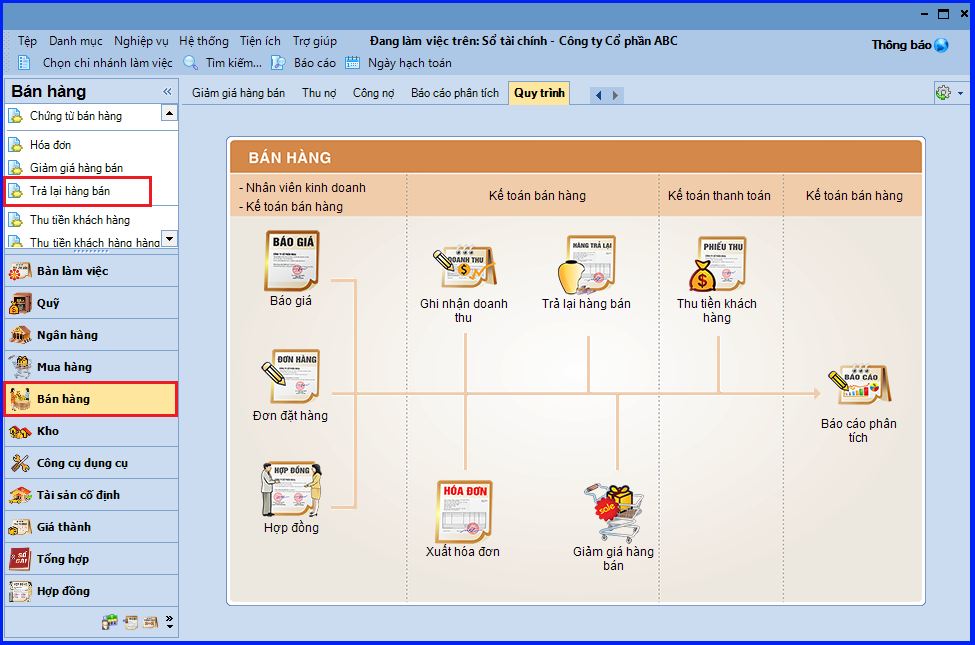
- Chọn loại chứng từ bán hàng có hàng bị trả lại.
- Lựa chọn phương thức giảm trừ cho chứng từ trả lại.
- Chọn chứng từ bán hàng có mặt hàng được giảm giá theo một trong hai cách sau:
+ Cách 1: Ấn vào biểu tượng mũi tên để chọn chứng từ bán hàng từ trong danh sách.
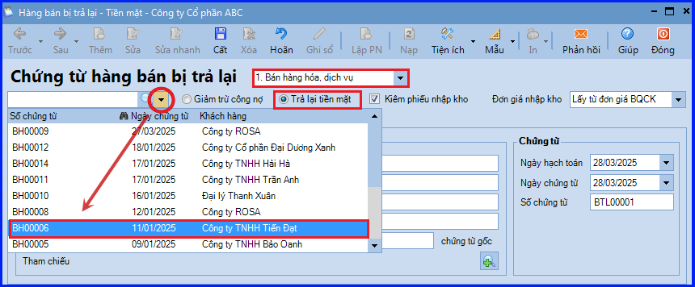
+ Cách 2: Ấn vào biểu tượng kính lúp để tìm kiếm và chọn chứng từ bán hàng:
- Thiết lập điều kiện để tìm kiếm chứng từ bán hàng => ấn "Lấy dữ liệu".
- Tích chọn mặt hàng bị trả lại và nhập số lượng hàng trả lại.
- Ấn "Đồng ý".
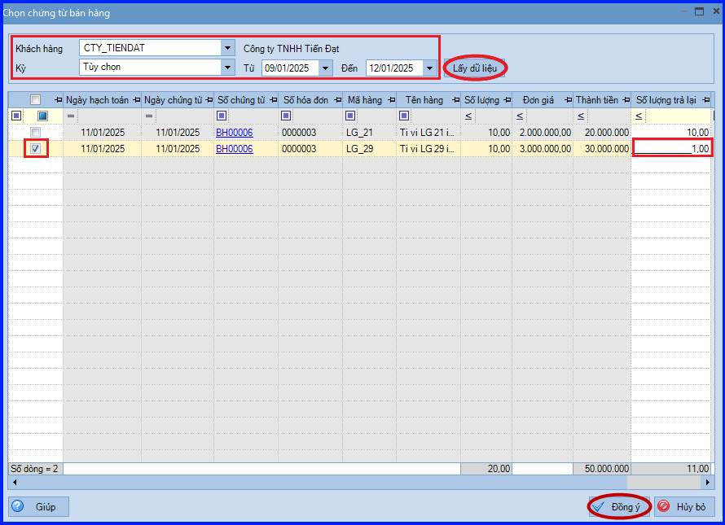
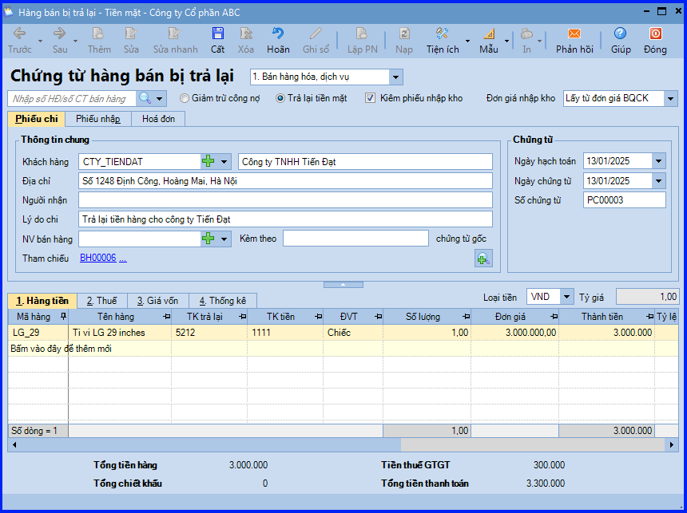
- Tích chọn ô "Kiêm phiếu nhập kho", nếu muốn lập luôn phiếu nhập kho cho hàng bán bị trả lại.
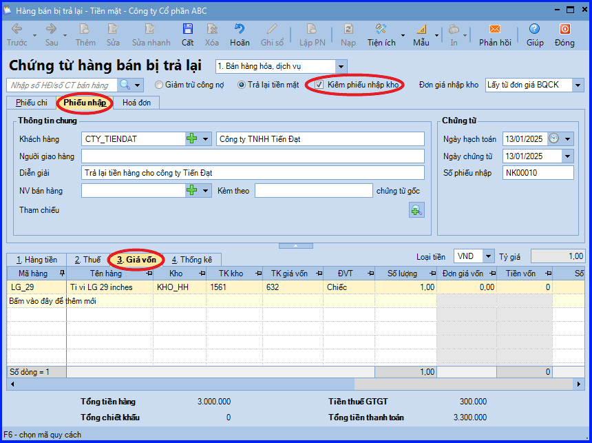
- Khai báo thông tin hóa đơn trả lại hàng bán của khách hàng.
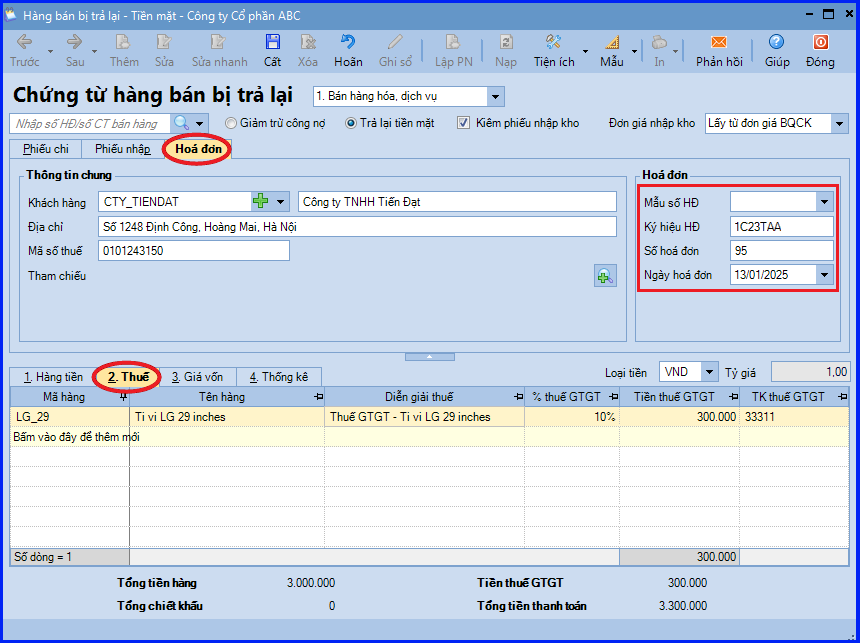
- Ấn "Cất".
CHÚ Ý:
- Nếu lựa chọn phương thức thanh toán là Trả lại tiền mặt và trường hợp Thủ quỹ có tham gia sử dụng phần mềm, chương trình sẽ tự động sinh ra phiếu chi trên tab "Đề nghị thu, chi" của Thủ quỹ. Thủ quỹ sẽ thực hiện ghi sổ phiếu chi vào sổ qũy.
- Sau khi chứng từ hàng bán bị trả lại có tích chọn "Kiêm phiếu nhập kho" được lập và trường hợp Thủ kho có tham gia sử dụng phần mềm, chương trình sẽ tự động sinh phiếu nhập kho trên tab "Đề nghị nhập, xuất kho" của Thủ kho. Thủ kho hiện việc ghi sổ phiếu nhập kho vào sổ kho.
- Trường hợp đơn vị thực hiện lập chứng từ hàng bán bị trả lại trước, lập phiếu nhập kho sau thì có thể lập nhanh phiếu nhập kho bằng cách sử dụng chức năng "Lập Phiếu Nhập".
CHÚ Ý:
- Trường hợp lựa chọn lập chứng từ trả lại hàng bán Kiêm phiếu nhập kho, đơn giá vốn của mặt hàng bị trả lại sẽ được tính như sau:
- Cho phép nhập lại đơn giá vốn => Áp dụng trong trường hợp kế toán muốn nhập chính xác đơn giá vốn của hàng bán bị trả lại.
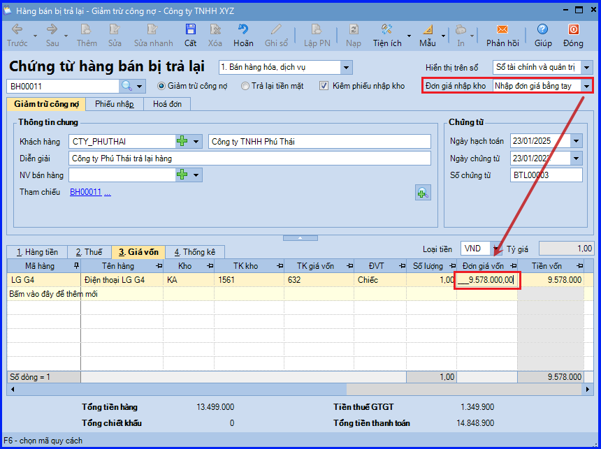
- Để chương trình tự động tính => Khi đó sẽ xảy ra các trường hợp sau:
- Với phương pháp tính giá Bình quân cuối kỳ, Đơn giá vốn của hàng bán bị trả lại sẽ được chương trình tự động cập nhật sau khi thực hiện tính giá xuất kho => Mỗi lần tính lại giá, Đơn giá vốn sẽ được cập nhật lại theo sự thay đổi của lần tính giá đó.
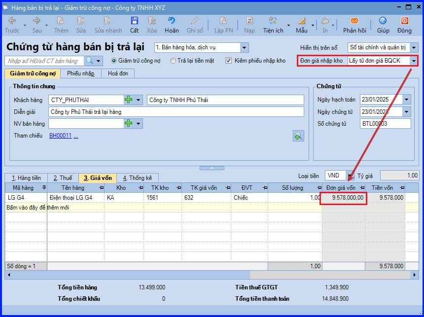
- Với phương pháp tính giá Bình quân tức thời, Đơn giá vốn của hàng bán bị trả lại sẽ được chương trình tự động cập nhật sau khi thực hiện tính giá xuất kho => Mỗi lần tính lại giá, Đơn giá vốn sẽ được cập nhật lại theo sự thay đổi của lần tính giá đó. Đồng thời, vẫn cho phép Kế toán nhập lại đơn giá vốn bằng tay.
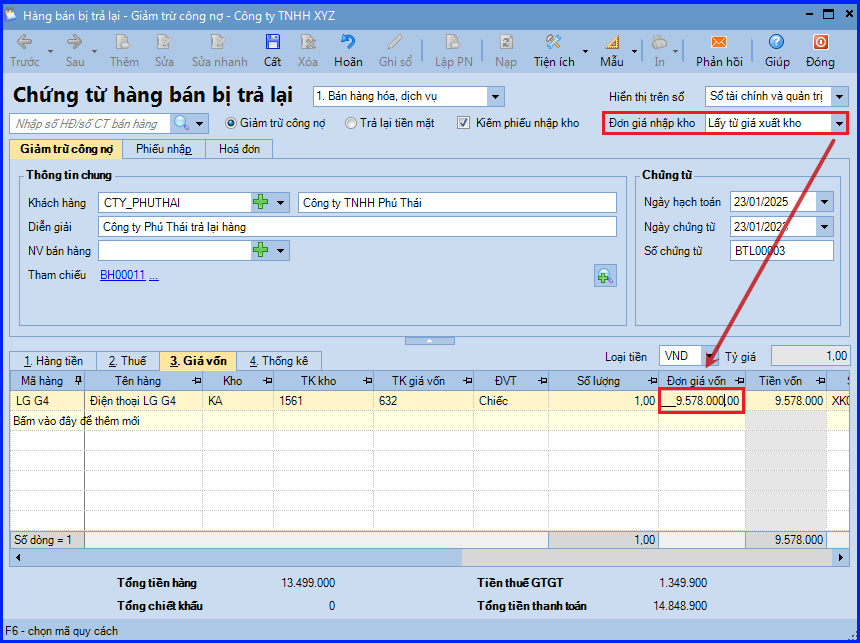
- Với phương pháp Đích danh và Nhập trước, xuất trước, Đơn giá vốn của hàng bán bị trả lại sẽ được chương trình tự động cập nhật sau lần tính giá xuất kho đầu tiên => Với các lần tính lại giá sau, Đơn giá vốn sẽ không được cập nhật lại.
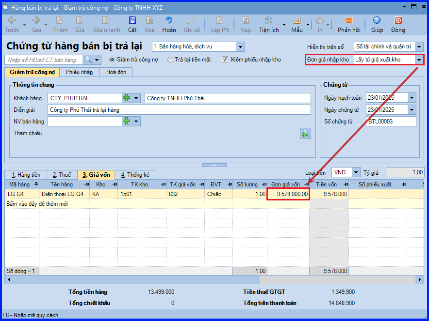
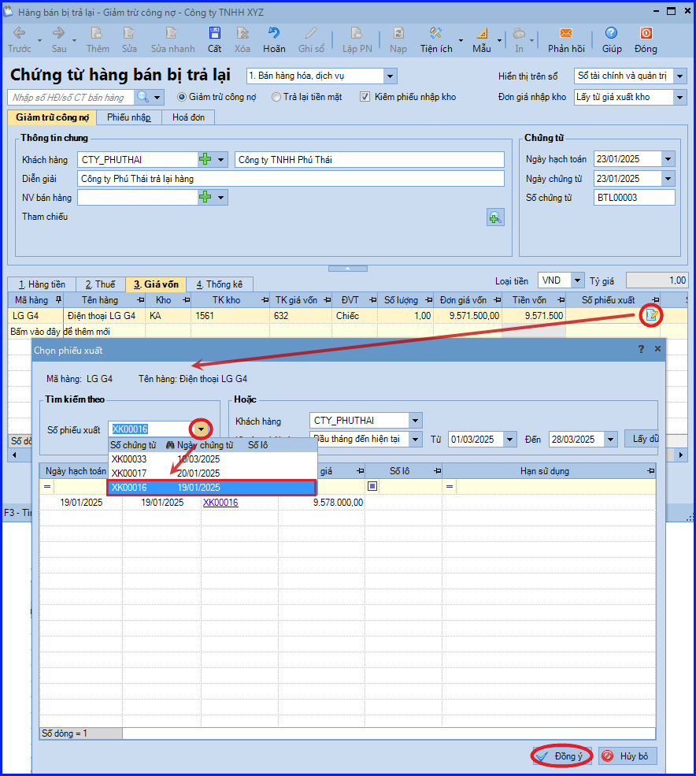
KẾ TOÁN DIỆU TÂM chúc các bạn làm tốt!
=============================
Nếu bạn muốn thành thạo các kỹ năng làm kế toán trên phần mềm Misa
Thì bạn có thể tham khảo "Khóa Học Thực Hành Kế Toán Trên Phần Mềm Misa" tại Công ty đào tạo Kế Toán Diệu Tâm
Trong khóa học này, bạn sẽ được dạy cách lên sổ sách, lập báo cáo tài chính trên phần mềm Misa
Chi tiết về chương trình đào tạo bạn xem tại đây nhé: Khóa học thực hành kế toán trên Misa
=============================
=============================
Nếu bạn muốn thành thạo các kỹ năng làm kế toán trên phần mềm Misa
Thì bạn có thể tham khảo "Khóa Học Thực Hành Kế Toán Trên Phần Mềm Misa" tại Công ty đào tạo Kế Toán Diệu Tâm
Trong khóa học này, bạn sẽ được dạy cách lên sổ sách, lập báo cáo tài chính trên phần mềm Misa
Chi tiết về chương trình đào tạo bạn xem tại đây nhé: Khóa học thực hành kế toán trên Misa
=============================